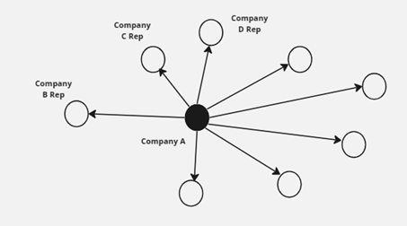
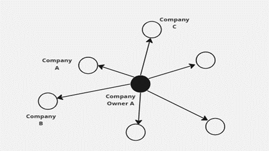
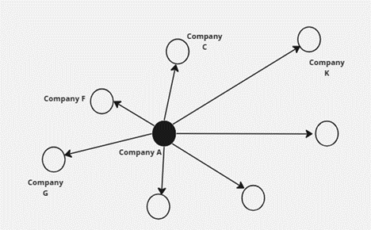

Proposal
1. Overview
This proposal is to make use of Visual Analytics to understand patterns of groups in the knowledge graph and highlight anomalous groups for VAST Challenge 2023 (Mini-Challenge 3).
2. Introduction
FishEye International is a non-profit organisation which focuses on countering illegal, unreported, and unregulated (IUU) fishing. They had believed that companies with anomalous structures are far more likely to be involved in IUU. After obtaining access to an international database on fishing related companies including information about companies, owners, workers, and financial status, FishEye is aiming to use this graph to identify anomalies that could indicate a company is involved in IUU.
3. Project Objectives
For our project, we aim to achieve the following objectives:
understand patterns of groups in the knowledge graph and highlight anomalous groups;
identify anomalies in the business groups present in the knowledge graph;
develop a visual analytics process to find similar businesses and group them based on important features identified;
measure similarity of the grouped businesses; and
Present the case on whether anomalous companies are involved in illegal fishing, and highlight business groups that require further investigations.
4. Motivation Behind the Tasks
Our tasks are to assist FishEye in developing a new visual analytics approach to better understand fishing business anomalies. By accurately detecting and understanding anomalies, such as illegal or overfishing activities, the visual analytics approach can contribute to more effective fisheries management. This, in turn, promotes sustainable fishing practices, helps preserve marine ecosystems, and ensures the long-term viability of fish populations.
5. Potential Issues & Challenges
It will be challenging to work on the voluminous data given there are 27,622 nodes and 24,038 edges.
The column
product_servicesconsists of a wide variety of products and services from different industries. Currently, there is no guidance on the relationship between each products/services and we would need to establish the relevance of the different products/services related to fishing activities and to filter the values accordingly.There is a need to find the correlations of different dimensions such as
country,products_servicesandrevenue_omuand see if there are any prevalent patterns. There is lack of context to the data upfront, and we would have to make logical assumptions in our analysis.There is a need to differentiate the type of roles that each source and target, in order to identify the relationships between the different companies.
- There are data with
character(0),unknownorNAvalues that would need to be handled in order to make the data analysis more accurate and meaningful.
6. Relevant Work and Proposed Approach
We will adopt the following methodology:
The group will meet up and brainstorm on the scope of the project as well as the deliverables that are relevant that can be mapped to meet our project objectives.
Data preparation will be carried out using data cleaning techniques to check for missing values, duplicates and inconsistencies in the data format and categorisation, as well as data transformation to mutate and derive suitable data variables for our analysis.
Carry out data exploration:
Identifying fishing-related products and services:
Identifying Outliers: Focus on outliers or data points that deviate significantly from the expected patterns. Outliers in the relationships between country, products/services, and revenues could indicate irregularities or anomalies in the fishing business. These outliers may help pinpoint areas that require further investigation.
Build relevant visual network models to illustrate the characteristics of the business entities through the computation of centrality metrics. Establish connections or edges between entities based on their interactions, collaborations, or dependencies. We can consider the following centrality metrices:
Betweenness Centrality: Identifies entities that act as bridges or intermediaries between other entities within the network.
Eigenvector Centrality: Considers both the number and importance of the entities connected to a particular business entity.
Community detection: Explore the potential grouping of entities based on their potential of forming communities.
With the results of the visualisation plots, analyse and reveal the connectivity (relationship) between the business entities, and to identify abnormalities within the network. The following are some of the proposed areas of our focus.
Network analysis on the top x revenue-generating companies to explore the extensiveness of their network reach of these companies.

Network analysis on business owners owning more than x companies to identify individuals with diversity of business ventures.

Network analysis on company-to-company relationships to help us identify possible abnormalities based on the nature of the target nodes that the source nodes are linked to. The “source’ companies can be determined based on relevancy of their business nature (e.g. fishing-related) using keyword search.
